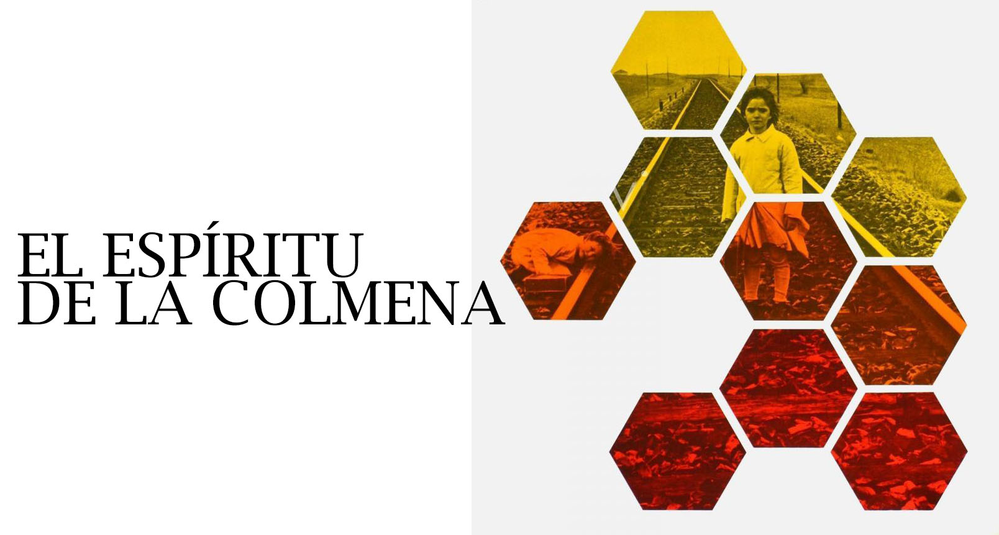
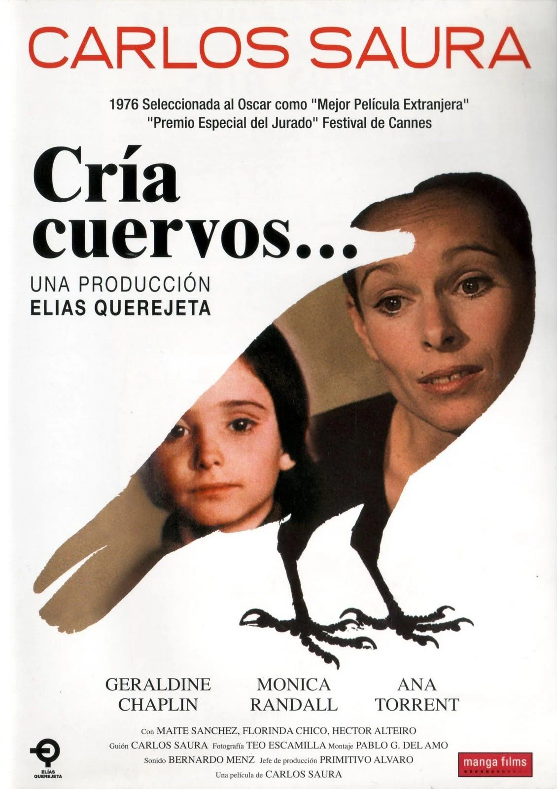
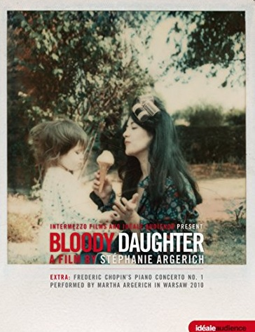
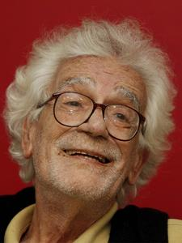

☰
Inicio
Acerca de
Peliculas
Material Complementario
Contacto
Material Complementario
Peliculas y audiovisuales
El espíritu de la colmena

Ver película
Cría Cuervos

Ver película
Martha Argerich en intimidad: Bloody Daughter

Ver documental
El silencio es un cuerpo que cae
Ver documental
El documental y la palabra

Ver
Canción de Agnes
Descargar archivo Word
Escuchar el audio
Entrevistas
Entrevista a Mathieu Almaric
Descargar archivo Word
Entrevista a Laura Santullo y Rodrigo Plá
Descargar archivo Word
Entrevista a Emmanuelle Nicot
Descargar archivo Word
Entrevista a Fatih Akin (director de "Al Otro Lado")
Descargar archivo Word
Entrevista Elena Martín Gimeno
Descargar archivo Word
Entrevista Ken Loach y Paul Laverty
Descargar archivo Word
Entrevista Li Ruijun
Descargar archivo Word
Entrevista Ken Loach y Paul Laverty
Descargar archivo Word
Artíulos periodísticos
Los problemas mentales en niños y jóvenes de los Estados Unidos
Leer el artículo completo
Perfección hay en la muerte
Leer el artículo completo